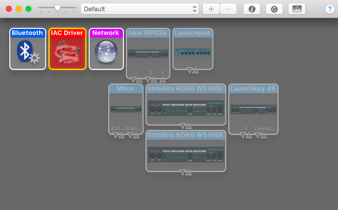
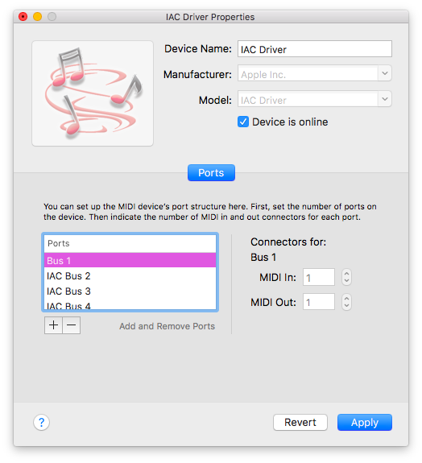

To connect tbd 2 to your DAW on a Mac, open Audio MIDI Setup.
You can do this by hitting command + space and typing "Audio MIDI Setup". Open the MIDI Studio
from the "Window" dropdown or by hitting command + 2, then click on the red IAC Driver icon.

In the MIDI Studio, check the name of your IAC driver and
click the "Device is online" box, then hit "Apply".

Now, just choose the IAC driver from the MIDI studio from the dropdown in your session!
Ableton Live
To setup your MIDI with Ableton Live, use the "MIDI From" dropdown on each MIDI track
to select the IAC Bus your TBD session is sending to.Then, select the channel that each TBD Instrument is
sending to on the matching track. Make sure each track is record enabled by clicking the red button.To
record enable multiple tracks, hold command while you click the record button on other tracks.